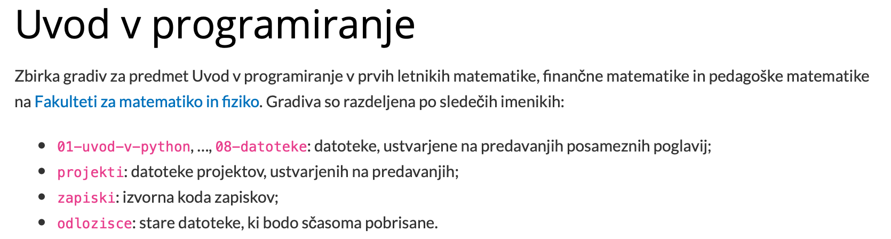

Nadzor različic¶
Kot smo že omenili, delo na večjih projektih poteka v več fazah, ki se med seboj izmenjujejo. Na primer, ko implementiramo vmesnik, vidimo, da nam v modelu manjka kakšna funkcionalnost. Če vsemu temu dodamo še dejstvo, da so večji programi sestavljeni iz več datotek, običajno pa na njih sodeluje več ljudi, hitro vidimo, da imamo pred seboj recept za zmedo. Velik del te zmede nam pomagajo razrešiti sistemi za nadzor različic (version control system), ki strukturirano beležijo spremembe v naših projektih ter nam omogočajo, da pogledamo, kdaj so se zgodile ali kdo jih je naredil, in jih po potrebi prekličemo. Uporaba sistemov za nadzor različic ni koristna le pri programiranju, temveč tudi pri pisanju (ob zaključevanju diplomskih del brez ustrezne podpore hitro nastanejo datoteke kot diploma-koncna.tex, diploma-koncna2.tex, diploma (zadnja).tex, diploma (oddana).tex, …)
Mi si bomo ogledali Git, ki je najbolj razširjeno sodobno orodje. “Pravi hekerji” Git uporabljajo prek ukazne vrstice, mi pa bomo raje uporabljali urejevalnik Visual Studio Code, ki ima dobro razvito podporo za Git.
Za začetek si poglejmo nekaj osnovnih izrazov, ki jih bomo uporabljali:
delovno drevo (working tree) je imenik z vsemi datotekami projekta, na katerem smo vklopili nadzor različic.
sprememba (commit) je osnovna enota nadzora različic, ki vsebuje zabeleženo stanje datotek skupaj s časom, avtorjem, opisom, podatkih o predhodnih spremembah in podobno. Vsaka sprememba tvori neko smiselno celoto, na primer popravek enega hrošča, dodatek nove funkcionalnosti, …
repozitorij (repository ali repo) je zbirka vseh zabeleženih sprememb.
klon (clone) je ena izmed kopij repozitorija. Ena se običajno nahaja na javnem strežniku (ta gradiva so na primer na GitHubu), vsak, ki dela na projektu pa ima eno kopijo še v delovnem drevesu (skrito v imeniku
.git).
Sinhronizacija med repozitoriji¶
Na svojem računalniku repozitorij vzpostavimo na dva načina. V obstoječem imeniku nov repozitorij vzpostavimo z ukazom Git: Initialize repository. Tudi če repozitorija ne delimo z nikomer, je koristen, saj nam omogoča pregled zgodovine, je pa tudi v tem primeru dobro, da imamo za vsak slučaj še eno varnostno kopijo na strežniku.
Če želimo imeti repozitorij tudi na strežniku, lahko nanj naložimo lokalnega. Še bolj enostavno pa je, če ga ustvarimo na strežniku in od tam kloniramo. To storimo z ukaozm Git: Clone, ki nas prosi za naslov repozitorija, na primer git@github.com:matijapretnar/uvod-v-programiranje.git. S tem ukazu se na našem računalniku ustvari popoln klon repozitorija na strežniku.
Novo spremembo ustvarimo v pogledu Source Control, v katerem imamo tri dele. Pod Changes vidimo vse datoteke, ki so se spremenile od zadnje zabeležene spremembe. Izbrane datoteke (lahko tudi vse, ali pa samo določene vrstice v njih) lahko premaknemo pod Staged Changes, kjer pripravljamo vse, kar bo šlo v naslednjo spremembo. Na ta način lahko veliko spremembo razdelimo na več manjših, kar bo drugim (ali pa nam samim v prihodnosti) pomagalo pri lažjem razumevanju zgodovine sprememb. Ko smo pripravljeni, pod Message napišemo kratko sporočilo ter ustvarimo spremembo.
Spremembe pošljemo na strežnik z ukazom Git: Push, s strežnika pa jih povlečemo z Git: Pull. Urejevalnik Visual Studio Code ima v statusni vrstici tudi gumb za sinhronizacijo, ki kaže število čakajočih sprememb na obeh straneh, ob kliku pa jih pošlje v ustrezno smer.
Zlivanje sprememb in konflikti¶
Če na repozitoriju dela več ljudi (ali pa če sami hkrati delamo na več računalnikih), se nam bo hitro zgodilo, da bo na enem klonu nastala ena sprememba, na drugem klonu pa drugačna. Git zna te spremembe pametno uskladiti. Če se zgodi, da je na strežniku kakšna sprememba, ki je v našem repozitoriju še ni, nam svojih sprememb ne bo uspelo poslati na strežnik. Najprej moramo povleči tiste, ki so na strežniku, jih zliti (merge) z lokalnimi, in nato vse skupaj poslati nazaj. Vse skupaj najenostavneje naredimo kar z gumbom za sinhronizacijo. Git pri tem pazi, da se nobena izmed sprememb ne izgubi. Na primer, če je nekdo popravil vrstico na enem koncu datoteke, nekdo drug pa na drugem koncu, bosta v združeni različici spremenjeni obe vrstici.
Seveda pa ne bo vedno tako, saj bi lahko na obeh koncih spremenili isto vrstico. V tem primeru nastane konfklit pri zlivanju (merge conflict), ki ga je treba natančno pogledati in razrešiti ročno. Git take konflikte označi v datoteki sami in sicer, da na mesto konflikta vstavi posebna ločila ter vsebini obeh različic. Na primer, če bi iz vrstic
Projektne naloge se bomo lotili v sledečih korakih:
- Git
- tekstovni vmesnik
- spletni vmesnik
na enem koncu spremenili vrstni red
Projektne naloge se bomo lotili v sledečih korakih:
- tekstovni vmesnik
- Git
- spletni vmesnik
na drugem pa popravili naslov
Projektne naloge se bomo lotili v sledečih korakih:
- nadzor različic
- tekstovni vmesnik
- spletni vmesnik
bi ob združevanju prišlo do konflikta, ki bi ga Git v datoteki označil kot:
Projektne naloge se bomo lotili v sledečih korakih:
<<<<<<< HEAD
- tekstovni vmesnik
- Git
=======
- nadzor različic
- tekstovni vmesnik
>>>>>>> origin/master
- spletni vmesnik
Urejevalnik Visual Studio Code bo konflikte tudi jasno označil ter nam ponudil možnosti (izberi prvega, izberi drugega, izberi oba, primerjaj, …). Ko vidimo spremembo in razmislimo, da moramo spremeniti vrstni red kot naslov, ročno popravimo vrstice v
Projektne naloge se bomo lotili v sledečih korakih:
- nadzor različic
- tekstovni vmesnik
- spletni vmesnik
ter zabeležimo novo spremembo. Ko to storimo, zlite spremembe pošljemo nazaj na strežnik.
README.md in .gitignore¶
Za vsak Git repozitorij se spodobi, da vsebuje dve datoteki. V datoteki README.md napišemo kratek opis repozitorija in osnovna navodila za uporabo. Datoteko pišemo v Markdownu, ki je zelo razširjen jezik za enostavno oblikovanje besedil (med drugim so v njem pisani ti zapiski). Na primer, ustrezen README.md je
# Uvod v programiranje
Zbirka gradiv za predmet Uvod v programiranje v prvih letnikih matematike, finančne matematike in pedagoške matematike na [Fakulteti za matematiko in fiziko](https://www.fmf.uni-lj.si/). Gradiva so razdeljena po sledečih imenikih:
- `01-uvod-v-python`, ..., `08-datoteke`: datoteke, ustvarjene na predavanjih posameznih poglavij;
- `projekti`: datoteke projektov, ustvarjenih na predavanjih;
- `zapiski`: izvorna koda zapiskov;
- `odlozisce`: stare datoteke, ki bodo sčasoma pobrisane.
ki se potem dostikrat lepše pokaže kot:

Druga datoteka pa je .gitignore, v kateri naštejemo vse datoteke, ki jim v Gitu ne želimo slediti, na primer take, ki jih računalnik ustvari sam (recimo Python jih ustvari v mapi __pycache__, macOS rad ustvarja datoteke .DS_Store, Windowsi thumbs.db, LaTeX pa ustvari PDF datoteke ter pomožne datoteke s končnicami .aux, .log in podobno). Primer ustrezne datoteke .gitignore bi bil:
__pycache__
.DS_Store
thumbs.db
*.aux
*.bbl
*.blg
*.fdb_latexmk
*.toc
*.fls
*.log
*.out
*.pdf
*.pyc
*.synctex.gz